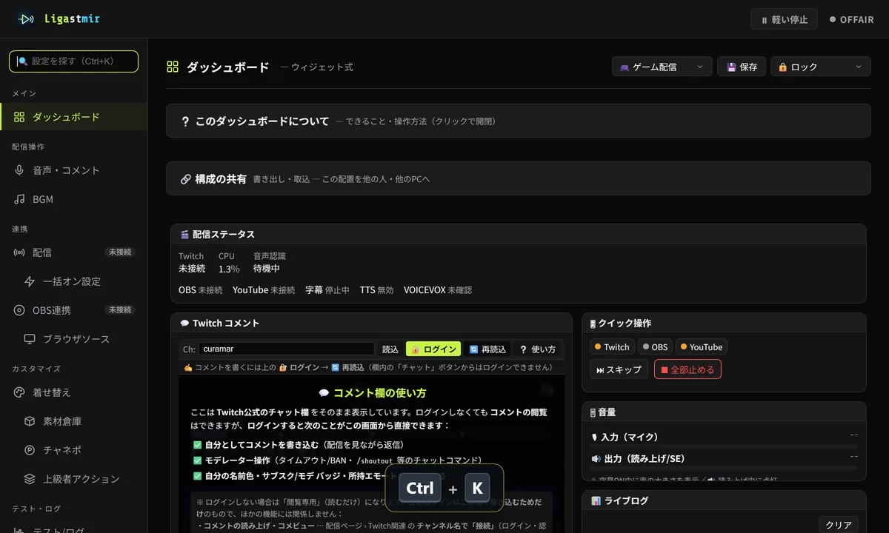
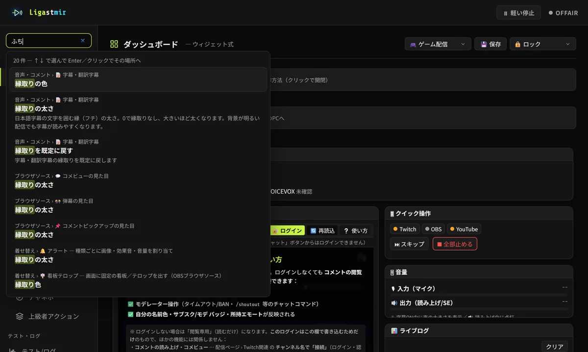
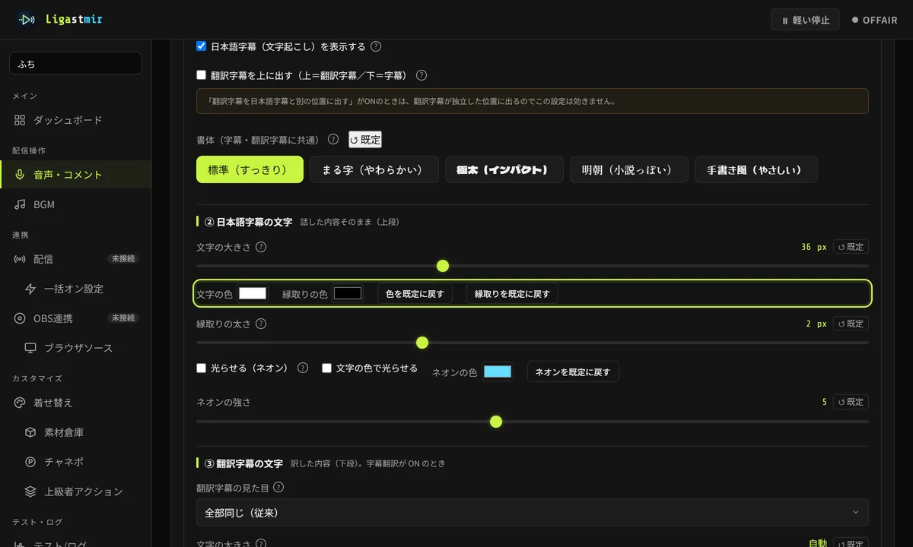

TIPS
知っておくと便利な機能
設定がどこにあるか分からないとき、配信の前や途中に困ったとき。見れば分かるように、動きで紹介します。
🔍 設定を言葉で探す（Ctrl＋K）
場所: 左メニューのいちばん上（どのページからでも Ctrl＋K）
探したい言葉を打つだけで、その設定の場所が出ます。言い方が違っても見つかります（「ふち」→「縁取り」、「光る」→「ネオン」）。Enter で、その場所まで連れて行って光らせます。



🔎 やりたいことから探す
場所: INFO の「🔎 やりたいことから探す」（使い方ガイドの 1 章）。Ctrl＋K の検索にも出ます
「〜したい」で探せる一覧です。機能の名前を知らなくても大丈夫。「そこへ ↗」で、その設定まで連れて行きます。
✨ 字幕の動きを「おすすめ」にする
場所: 音声・コメント › 字幕表示設定 › ① 表示の先頭
1 回押すだけで、改行・行数・消えるまでの秒数が、読みやすい組み合わせになります。色・大きさ・位置は変わりません。テンポの速い配信には「⚡ すばやく」、じっくり読んでもらうなら「🐢 ゆっくり読ませる」。
ひとつずつの意味は 字幕のページ にあります。